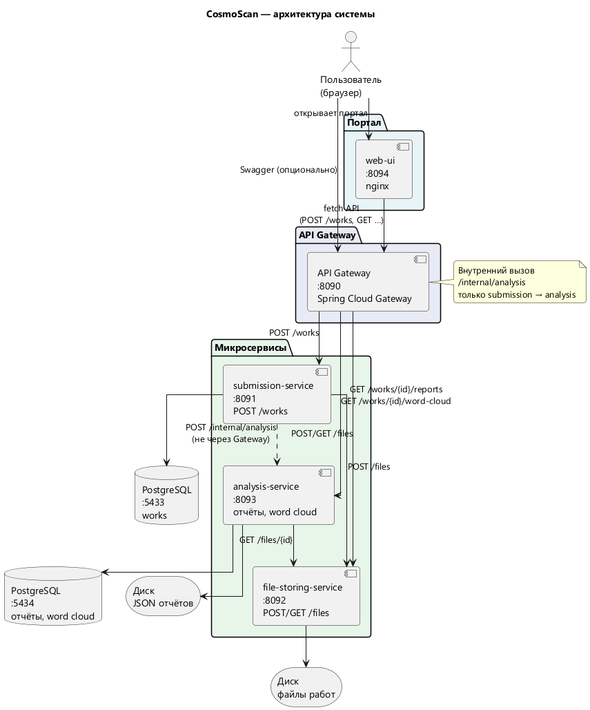
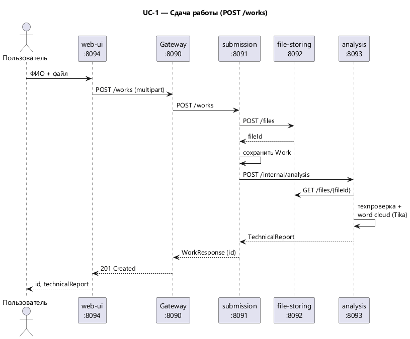

Схема системы
CosmoScan — микросервисы за API Gateway. Портал отправляет запросы на Gateway; сервисы обмениваются данными во внутренней сети.


Подключение к API
Запросы с форм ниже отправляются на API Gateway (см. схему выше).
8090. Меняйте только при нестандартном развёртывании.
Документация API (Swagger UI)
Интерактивная OpenAPI-документация каждого микросервиса, проксируется через Gateway.
Health check (Spring Actuator)
Прямые ссылки на /actuator/health backend-сервисов. Gateway Actuator не использует.
UC-1 Сдать работу
Студент загружает файл и сразу получает результат техпроверки. Соответствует POST /works.
Ответ сервера (JSON)
Сданные работы (для теста UC-2 / UC-3)
Список сохраняется в браузере. Клик по строке подставит ID работы в поля ниже.
| ФИО студента | ID работы | Файл | Сдано |
|---|
UC-2 Технические отчёты
Преподаватель запрашивает историю техпроверок по идентификатору работы. GET /works/{workId}/reports.
id). Обновляется при каждой новой сдаче или по клику в таблице выше.
Отчёты (JSON)
UC-3 Облако слов
Частотный срез текста работы для визуализации. Данные готовятся при сдаче (UC-1); чтение — GET /works/{workId}/word-cloud.
404.
terms (text, weight). При статусе READY термины рисуются на холсте ниже. NO_TEXT / FAILED — сообщение без графика.
Данные word cloud (JSON)
Покрытие тестами (JaCoCo)
HTML-отчёты JaCoCo (порог ≥ 60%). Ссылки ведут на http://localhost:8094 — нужен запущенный web-ui (docker compose up -d --build web-ui).